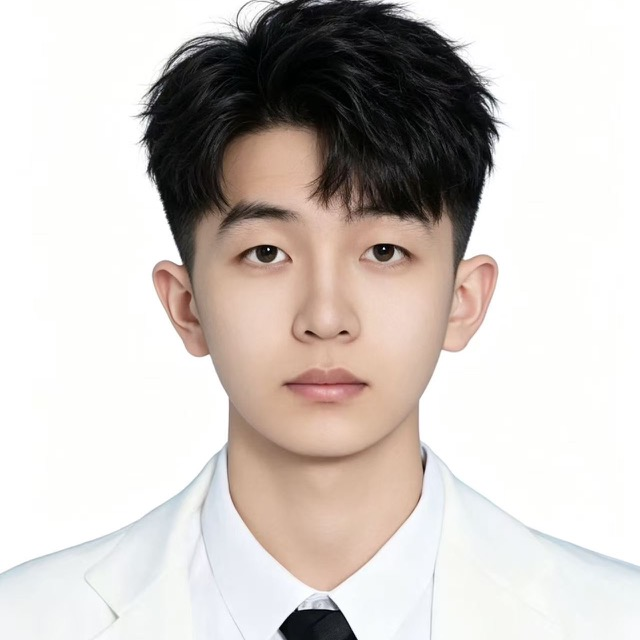

← 返回主页
🖨 打印 / 保存为 PDF
王绎宁
求职 / 升学意向：计算机视觉 · 多模态 方向算法工程师 | 目标保研至顶尖高校强组
男
出生：2007.09
政治面貌：共青团员
电话：15076090160
邮箱：2206836982@qq.com

教育背景
安徽大学 · 人工智能学院 · 智能科学与技术（本科）
2026.09 – 2030.06（预计）
GPA / 排名：暂无（大一首学期在读）
主修课程：高等数学、线性代数、程序设计、概率论与数理统计、数据结构、机器学习、计算机视觉
英语：暂无（备考中） 目标：CET-6 550+，能流畅阅读英文文献
科研经历
科研准备中（尚未进入课题组）
2026.10 – 至今
目标方向：计算机视觉 / 多模态（如多模态目标跟踪）
打牢数学与编程基础，系统学习 Python 与 PyTorch 的基本使用。
阅读并复现计算机视觉经典模型，理解卷积网络与注意力机制。
练习阅读英文论文，并把理解整理成学习笔记。
竞赛与获奖
暂无（正在通过课程学习与竞赛持续积累）
专业技能
编程语言：Python（使用中）、C / C++（基础）
框架 / 工具：PyTorch（入门）
外语：英语备考中，目标能够流畅阅读英文文献
自我评价
对计算机视觉与多模态方向有强烈兴趣，学习主动、能沉下心打基础，愿意从复现论文与跑实验做起。